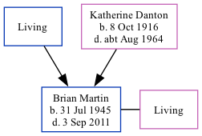

Brian Philip Martin 1945 - 2011
[ Home ] | [ Calendar ] | [ Surnames Index ] | [ Family History ]The son of Thomas Martin and Katherine DantonBrian Martin, the third cousin on the father's side of Nigel Horne, was born in East Ham, London, England on Jul 31, 19451,2. He married Kathleen Rust in Barking, Essex, England around May 19673.
He died on Sep 3, 2011 in Rainham, Essex, England2.
Parents
- Katherine was born on Oct 8, 1916
Citations
- England & Wales births 1837-2006 - Findmypast
- United Kingdom Deaths - Findmypast
- England & Wales Marriages 1837-2005 - Findmypast
Media
England & Wales births 1837-2006 - BMD/B/1945/3/AZ/000817/007
Family Trees - FMP/1311252717
United Kingdom Deaths 2007-2016 - BMD/D/MILLEN/001932798
England & Wales marriages 1837-2005 Transcription - BMD-M-1967-2-AZ-000671-048
Family Tree
Generated by ged2site. Last updated on Nov 13, 2024